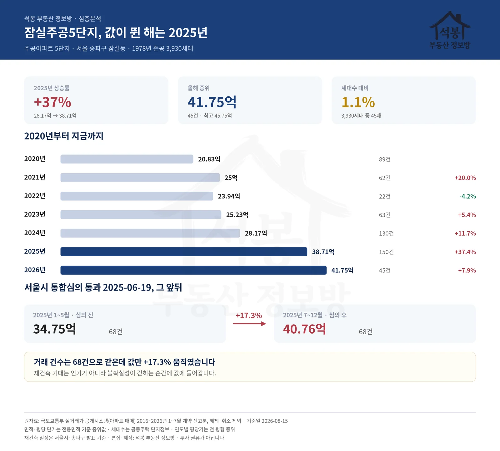
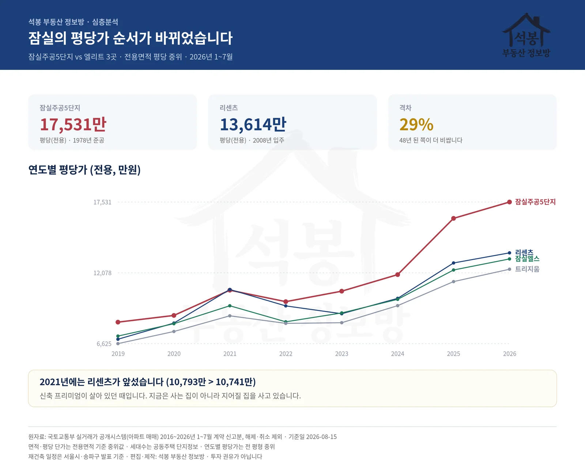
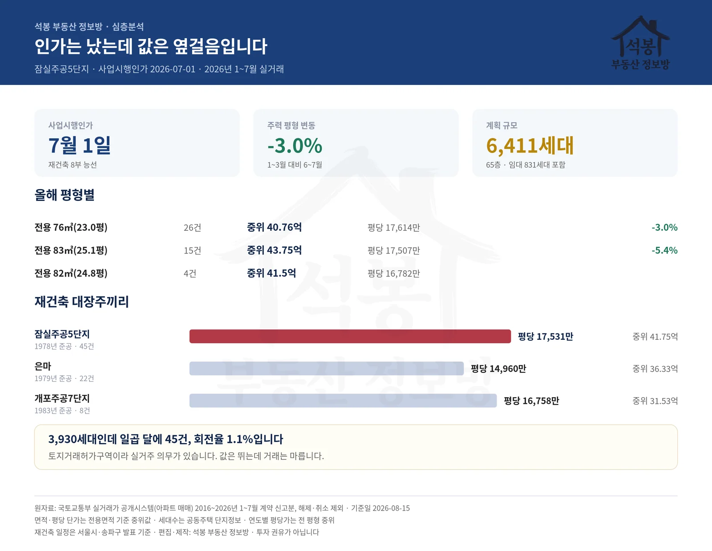

잠실주공5단지(잠실주공5단지 또는 잠실5단지) 이야기입니다. 1978년에 지어져 올해 48년 된 이 아파트가, 2008년 입주한 리센츠보다 평당 29% 비싸게 거래되고 있습니다. 값이 갈린 것은 최근 2년입니다. 무슨 일이 있었는지 2026년 1~7월 실거래와 10년 치 기록으로 따라가 봤습니다.
2025년에 값이 뛰었습니다
연도별 중위 거래가입니다. 전용 76㎡(23.0평) 기준으로 봐도 흐름은 같습니다.
| 연도 | 거래 | 중위 거래가 | 최고가 | 전년 대비 |
|---|---|---|---|---|
| 2020년 | 89건 | 20.83억 | 24.61억 | +6.0% |
| 2021년 | 62건 | 25.00억 | 32.79억 | +20.0% |
| 2022년 | 22건 | 23.94억 | 30.76억 | -4.2% |
| 2023년 | 63건 | 25.23억 | 29.46억 | +5.4% |
| 2024년 | 130건 | 28.17억 | 34.25억 | +11.7% |
| 2025년 | 150건 | 38.71억 | 46.25억 | +37.4% |
| 2026년 | 45건 | 41.75억 | 45.75억 | +7.9% |
2024년 28.17억에서 2025년 38.71억으로 한 해에 +37.4% 올랐습니다. 같은 기간 거래도 130건에서 150건으로 늘었습니다. 올해는 45건에 중위 41.75억, 최고 45.75억입니다.

가입하시면 지역 시장조사 보고서(약식)를 2회 무료로 요청하실 수 있습니다.
값이 움직인 날짜는 2025년 6월 19일입니다
서울시가 그날 제5차 정비사업 통합심의위원회에서 이 단지 재건축을 조건부 의결했습니다. 두 달 전인 2025-04-24 제3차 심의에서는 보류 판정을 받았다가, 조합이 조치계획서를 내고 재상정해 통과한 것입니다.
거래를 그 앞뒤로 갈라 보면 이렇습니다.
| 2025년 | 거래 | 중위 거래가 |
|---|---|---|
| 1~5월 (심의 전) | 68건 | 34.75억 |
| 7~12월 (심의 후) | 68건 | 40.76억 |
| 차이 | +17.3% | |
거래 건수는 68건으로 똑같은데 값만 +17.3% 움직였습니다. 월별로 보면 6월 39.17억에서 7월 42.51억으로 넘어가는 구간이 가장 가팔랐습니다. 심의 통과가 알려진 직후입니다.
잠실의 평당가 순서가 바뀌었습니다
이 단지가 얼마나 특이한지는 이웃과 견줘야 보입니다. 잠실에서 '엘리트'라 불리는 세 단지(리센츠·잠실엘스·트리지움)와 평당가(전용 기준)를 연도별로 나란히 놓았습니다.
| 단지 | 2019 | 2021 | 2023 | 2025 | 2026 |
|---|---|---|---|---|---|
| 잠실주공5단지 | 8,278 | 10,741 | 10,665 | 16,273 | 17,531 |
| 리센츠 | 6,962 | 10,793 | 8,927 | 12,836 | 13,614 |
| 잠실엘스 | 7,205 | 9,542 | 8,987 | 12,295 | 13,147 |
| 트리지움 | 6,625 | 8,768 | 8,236 | 11,402 | 12,355 |
단위: 만원 · 전용면적 평당 · 전 평형 중위값
2019년에는 19% 차이였습니다. 그런데 2021년에는 리센츠가 10,793만원으로 이 단지(10,741만원)를 앞질렀습니다. 신축 프리미엄이 살아 있던 때입니다. 그 뒤 다시 뒤집혔고, 지금은 29% 벌어졌습니다. 48년 된 아파트가 18년 된 아파트보다 평당 3천만원 이상 비쌉니다. 사는 집이 아니라 지어질 집을 사는 것이기 때문입니다.

그런데 올해는 내리고 있습니다
여기가 이 글에서 가장 짚고 싶은 대목입니다. 2026년 7월 1일, 송파구가 사업시행계획인가를 승인했습니다. 재건축 절차에서 8부 능선으로 불리는 단계입니다. 그런데 값은 오르지 않았습니다.
| 전용면적 | 거래 | 중위 거래가 | 평당(전용) | 1~3월 대비 6~7월 |
|---|---|---|---|---|
| 전용 76㎡(23.0평) | 26건 | 40.76억 | 17,614만원 | -3.0% |
| 전용 83㎡(25.1평) | 15건 | 43.75억 | 17,507만원 | -5.4% |
| 전용 82㎡(24.8평) | 4건 | 41.50억 | 16,782만원 | - |
주력인 전용 76㎡(23.0평)이 1~3월 41.82억에서 6~7월 40.57억으로 -3.0%, 83㎡(25.1평)는 -5.4%입니다. 인가가 난 달을 포함한 기간인데도 그렇습니다.
재건축 기대가 값에 들어가는 시점이 인허가의 마지막이 아니라 불확실성이 걷히는 순간이라는 뜻으로 읽힙니다. 2025년 6월 심의 통과 때 이미 +17.3%가 반영됐고, 1년 뒤 인가는 예정된 절차였습니다. 재건축 단지를 볼 때 "어디까지 왔나"만큼 "그 소식이 언제 알려졌나"를 함께 봐야 하는 이유입니다.
3,930세대인데 일곱 달에 45건입니다
거래가 유난히 적습니다. 세대수 대비 1.1%로, 백 집 중 한 집만 주인이 바뀌었습니다. 같은 잠실 리센츠는 5,563세대에 141건으로 2.5%였습니다. 두 배 넘게 차이 납니다.
이 단지는 토지거래허가구역입니다. 2025년 2월 잠실동 일대가 한 차례 해제됐을 때도 안전진단을 통과한 재건축 단지 14곳에 포함돼 규제가 유지됐고, 3월에 강남3구·용산 전역이 다시 묶였습니다. 사려면 실거주 의무를 져야 하니 갭투자로는 들어갈 수 없습니다. 값은 뛰는데 거래는 마르는 구조가 여기서 나옵니다.
재건축 대장주끼리 견주면
| 단지 | 준공 | 거래 | 중위 거래가 | 평당(전용) |
|---|---|---|---|---|
| 잠실주공5단지 | 1978년 | 45건 | 41.75억 | 17,531만원 |
| 은마(대치동) | 1979년 | 22건 | 36.33억 | 14,960만원 |
| 개포주공7단지 | 1983년 | 8건 | 31.53억 | 16,758만원 |
은마(1979년 준공)이 평당 14,960만원, 개포주공7단지가 16,758만원입니다. 셋 중 이 단지가 가장 높습니다. 한강변이고 잠실역이 붙어 있으며 6,411세대 규모로 다시 지어진다는 계획이 값에 얼마나 들어가 있는지를 보여주는 숫자입니다.
파급은 옆으로도 갑니다. 통합 재건축을 추진 중인 장미1차는 2025년 중위 29.4억에서 올해 31.4억으로, 장미2차는 26.5억에서 31.25억으로 올랐습니다.

정리하면
1978년에 지어진 3,930세대 아파트가 65층 6,411세대(임대 831세대 포함)로 다시 지어집니다. 착공 2027년, 입주 2031년경이 업계 전망입니다. 아직 5년 넘게 남았습니다.
값의 궤적은 이렇게 요약됩니다. 2024년까지 28.17억이던 것이 심의를 통과한 2025년에 38.71억으로 뛰었고, 인가가 난 올해는 41.75억에서 옆걸음입니다. 오를 이유가 없어졌다기보다 오를 이유가 이미 값에 들어갔다고 보는 편이 맞을 것 같습니다. 남은 변수는 관리처분계획과 일반분양가인데, 그건 아직 숫자가 나오지 않았습니다.
개인적으로는 회전율 1.1%가 가장 눈에 걸렸습니다. 백 집 중 한 집만 움직인다는 것은 지금 값이 사려는 사람이 많아서가 아니라 팔려는 사람이 적어서 만들어졌을 가능성을 남깁니다. 실거주 의무가 풀리거나 이주가 시작되면 그때 물량이 어떻게 나오는지가 다음 관전 포인트입니다.
원자료: 국토교통부 실거래가 공개시스템(아파트 매매) 2016~2026년 1~7월 계약 신고분, 해제·취소 제외 · 기준일 2026-08-15 · 세대수는 공동주택 단지정보
면적·평당 단가는 전용면적 기준 중위값 · 연도별 평당가는 전 평형 중위라 거래된 평형 구성에 따라 흔들릴 수 있습니다
재건축 일정·계획(통합심의 2025-06-19, 사업시행인가 2026-07-01, 65층 6,411세대)은 서울시·송파구 발표와 보도 기준 · 편집·제작: 석봉 부동산 정보방 · 투자 권유가 아닙니다.